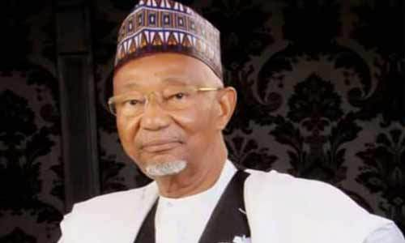
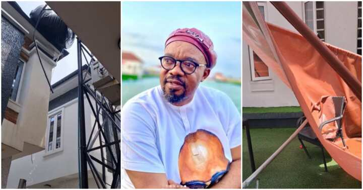

Political News
Bulkachuwa asks court to stop ICPC’s investigation, arrest

A former Senator representing Bauchi North Senatorial District, Muhammed Bulkachuwa, has approached a Federal High Court in Abuja to bar the Independent Corrupt Practices and Other Related Offences Commission from investigating and arresting him over the comments he made during the valedictory session of the ninth Senate
Read More:
ENTERTAINMENT NEWS
Veteran Nollywood actor Charles Inojie recently escaped a major domestic hazard that could have claimed his life.

"That morning, I was just sitting down waiting for my breakfast. It was on set. I was served while I was eating. I noticed that the PM was pacing around, so I knew that was a sign that they were waiting for me. So I asked him if I was the one they were waiting for, and he said no, take your time since you're still eating. But I insisted and said I was already full let us go, even though he said they would wait for me to finish my food, I just decided to get up and gave him the food."
Read More :